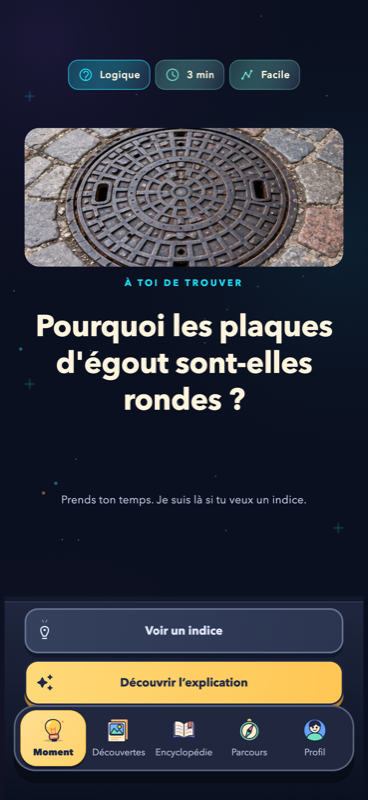
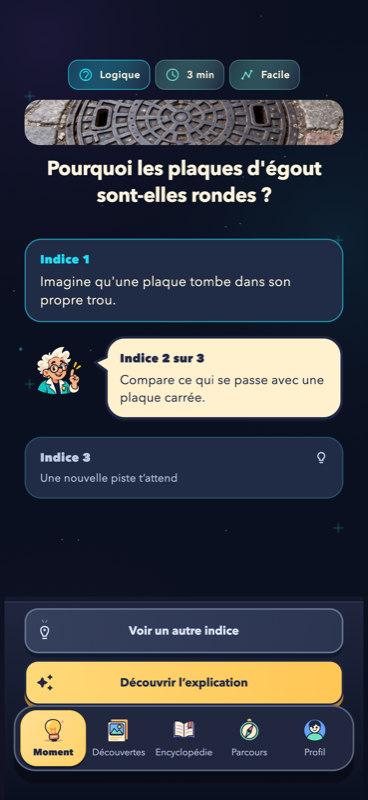
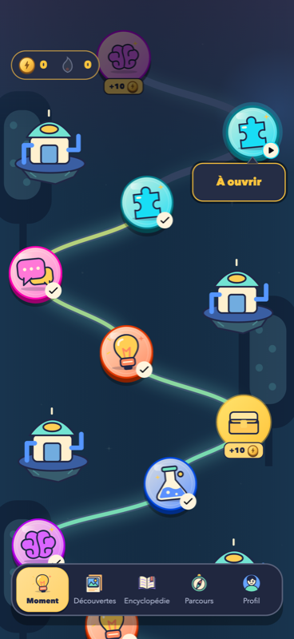

Prends un instant.
Observe et cherche ta propre piste.
POUR LES ESPRITS CURIEUX
Le monde est plein de choses étonnantes.
Découvre-les, comprends-les, garde-les.
Sur iPhone et Android · Commence sans créer de compte

DÉCOUVERTES
Un fait court, une vraie image, une nouvelle chose à raconter. Explore les sujets qui t’attirent et garde tes coups de cœur dans ton Encyclopédie.
Glisse vers le haut ou le bas pour changer de découverte.
Retrouve tes découvertes enregistrées dans l’app.
Voici cinq extraits du catalogue. Les cœurs de cet aperçu restent uniquement dans cette page, sans synchronisation avec l’app.
Chargement des découvertes…
LES MOMENTS EURÊKA
Une question qui intrigue. Des indices pour avancer.
Et ce plaisir quand tout devient clair.
Observe et cherche ta propre piste.

Le professeur t’accompagne à ton rythme.
Découvre l’explication, puis indique si tu as eu le déclic. Chaque Moment terminé fait avancer ton parcours.
Et après ? ↓
UN PARCOURS QUI SE CONSTRUIT
Explore les mondes, ouvre des coffres et gagne des badges. Tes Moments et tes Découvertes trouvent leur place dans une Encyclopédie qui grandit avec toi.
Relis les Moments ouverts et retrouve tes Découvertes enregistrées.
Grades, matières explorées et activité : vois ce que tu construis.
CHOISIS TON RYTHME
Les prix, l’essai éventuel et les conditions de renouvellement sont affichés dans l’application avant tout achat. Horaire : Europe/Paris.
ON T’EXPLIQUE
Un Moment te propose de réfléchir à une question, avec des indices puis une explication. Une Découverte est un fait illustré à lire directement, sans réponse à donner.
Tu peux commencer en mode invité. Dans ce mode, ta progression et tes Découvertes enregistrées restent sur ton appareil. Les favoris Découvertes ne sont pas encore synchronisés entre appareils.
Les trois Découvertes gratuites sont renouvelées. Avec Premium, un nouveau Moment devient disponible. L’horaire suit le fuseau Europe/Paris.
Chaque Découverte donne accès à sa source, au crédit de la photo et à sa licence. Les illustrations des Moments peuvent être des images de contexte générées ; elles ne remplacent pas l’explication.
TA PROCHAINE DÉCOUVERTE
Un peu de curiosité. Beaucoup de choses à découvrir.